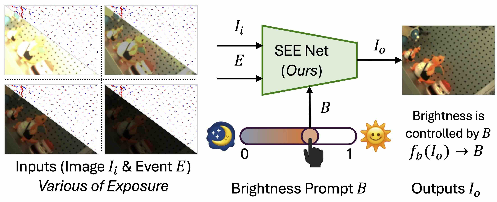
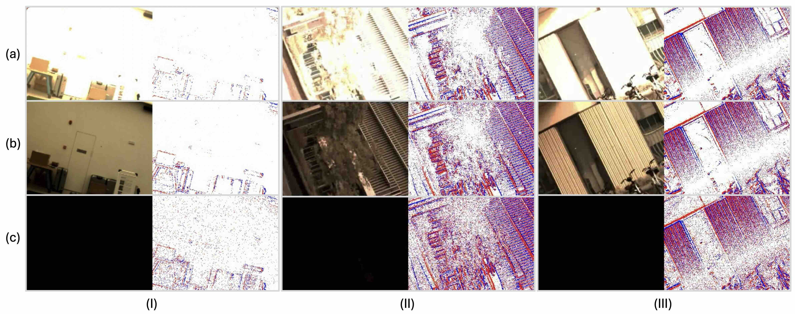
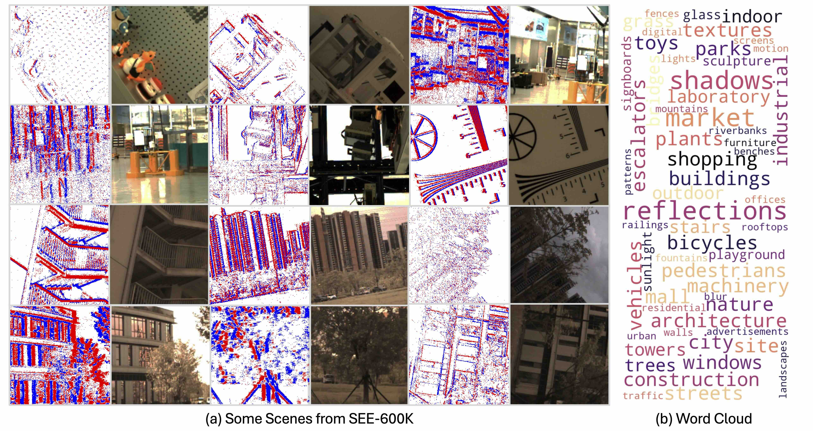
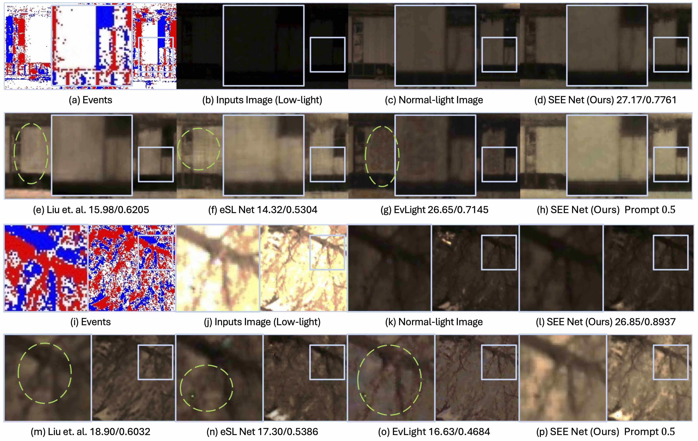

610K+
RGB images with event data
Broad-Light Adaptive Brightness Adjustment
Event-Guided Low-Level Imaging
RGB + events for brightness-adjusted RGB restoration under low light, over-exposure, mixed illumination, high contrast, and motion.
610K+
RGB images with event data
202
real-world scenarios
>1000x
illumination variation
3
low / normal / high light
4
lighting groups per scene on average
1.9M
SEE-Net baseline parameters

Input RGB under challenging illumination + event representation -> brightness-adjusted RGB output.

Examples cover low-light, normal-light, high-light, mixed illumination, and event views.

202 real-world scenarios with broad scene categories and multiple lighting groups.

SEE-Net uses RGB frames, event data, and a brightness prompt for controllable output exposure.
| Input | Challenging RGB image, event stream / voxel, optional brightness prompt. |
|---|---|
| Output | Brightness-adjusted RGB image matching the input sample ID and resolution. |
| Goal | Well-exposed, detailed, structurally faithful, naturally colored result. |
| Metric | Role | Better |
|---|---|---|
| PSNR | Primary ranking | Higher |
| SSIM | Structure | Higher |
| LPIPS | Perception | Lower |
| 1. Data | Download SEE-600K from Hugging Face. The Hugging Face release is aligned and ready to use. |
|---|---|
| 2. Setup | Clone SEE, create a Python 3.10 environment, then install requirements.txt. |
| 3. Train | Edit DATASET.root in options/SEE/SEENet_SEE.yaml, then run SEE-Net. |
| 4. Test | Use --TEST_ONLY=True and --VISUALIZE=True to save validation outputs. |
git clone https://github.com/yunfanLu/SEE.git
cd SEE
conda create -n see python=3.10 -y
conda activate see
pip install -r requirements.txt
export PYTHONPATH="./":$PYTHONPATH
python see/main.py \
--yaml_file="options/SEE/SEENet_SEE.yaml" \
--log_dir="./logs/SEE/SEENet_SEE/" \
--alsologtostderr=Truesubmission.zip
`-- results/
|-- scene_000001.png
|-- scene_000002.png
|-- scene_000003.png
`-- ...May 10, 2026
Challenge website opens
May 15, 2026
Validation server online
June 25, 2026
Test data and server online
July 3, 2026
Final submission deadline
July 10, 2026
Results announcement
@article{lu2025SEE,
title={SEE: See Everything Every Time - Adaptive Brightness Adjustment for Broad Light Range Images via Events},
author={Yunfan Lu, Xiaogang Xu, Hao Lu, Yanlin Qian, Pengteng Li, Huizai Yao, Bin Yang, Junyi Li, Qianyi Cai, Weiyu Guo, Hui Xiong},
year={2025},
}Contact: Yunfan Lu